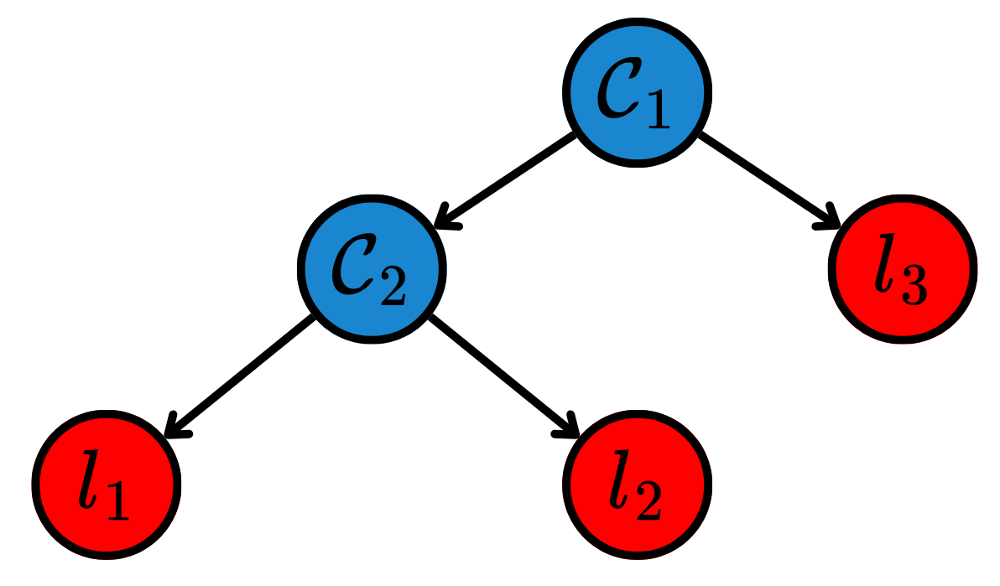
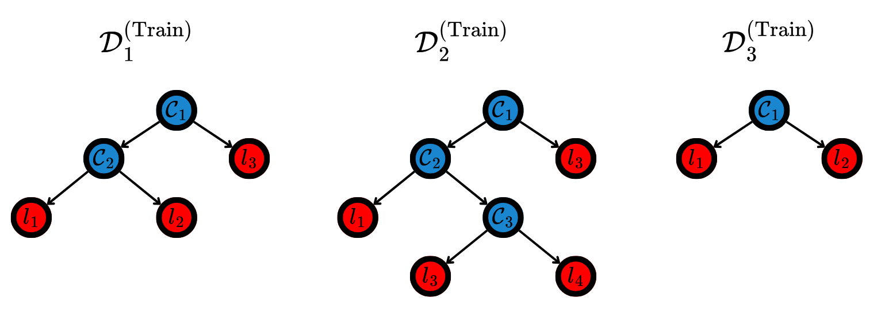

import numpy as np
import matplotlib.pyplot as plt
from sklearn.datasets import load_breast_cancer
from sklearn.tree import DecisionTreeClassifier, plot_tree
from sklearn.model_selection import train_test_split
from sklearn.metrics import classification_reportTree Models
In Linear Models, the Explainable Boosting Machine (EBM) algorithm was presented. As mentioned, it used decision trees to approximate the functions from the Generalized Additive Models (GAMs) using decision trees. Here, more tree-based models are going to be introduced.
Decision Tree (DT)
A Decision Tree (DT) is formally defined as a directed acyclic graph – also called a tree –, possessing two types of nodes: decision and leaf nodes. Decision nodes present conditional tests based on a certain feature. Observations that satisfy the condition moves to the left child node, while the other go to the right child. Each decision node separates the observations in two subsets, doing the same in feature space. On the other hand, leaf nodes represent a certain region in feature space, without having child nodes. They are at the end of the trees and represent the regions formed by specific paths generated by following the decision nodes. Fig. 1 depicts a DT.

During training, the decision nodes in the DT are formed by maximizing the purity of its child nodes. The intuition is that each conditional test should separate the data as much as possible, effectively grouping observations that are present in similar regions in space. To measure how pure a node is, impurity functions are used. For classification, one of the most common impurity functions is the entropy of the data. Let the class proportions in a certain node \(\mathcal C_i\) be \(\{p_i\}_{i=1}^n\). The entropy \(\mathcal H\) of that node is defined as: \[ \mathcal H(\mathcal C) = -\sum_{i=1}^{n} p_i \log p_i. \tag{1}\] Note that this function is maximized when the proportion of all classes is the same, and minimized when there is only a single class in the node. The splits are chosen so that the information gain is maximized, being defined as: \[ \mathcal I(\mathcal C_i, \mathcal C_j) = \mathcal H(\mathcal C_i) - \mathcal H(\mathcal C_i \mid \mathcal C_j), \tag{2}\] where \(\mathcal H(\mathcal C_i \mid \mathcal C_j)\) denotes the conditional entropy after the split made in \(\mathcal C_j\). The splits that maximize the function \(\mathcal I\) produce the purest child nodes. For regression, the same ideia is valid, though the impurity function to be minimized is generally the variance of the targets.
After training, the inference uses an aggregation function \(g: \mathbb R^{L\times n} \to \mathbb R\) to combine the targets from the \(L\) training observations that lied in each node. This combined value is set as the prediction of the new data points.
Note that DTs do not assume any distribution for the data, and are also invariant to transformations that do not change the sequence of the elements in any given interval. Another important fact is that by maximizing purity of the child nodes, it automatically selects the most important attributes for predicting the target – as the first ones are the ones that most separate the observations.
Code: Decision Tree
Random Forest (RF)
A DT is a model with low bias and high variance, overfitting the training data. To avoid this, the Random Forest (RF) (Breiman 2001) model ensembles various DTs, aggregating their predictions. This increases bias and decreases variance, leading to more robust models.
RF operates through a process called Bootstrap Aggregating – also know as bagging. Multiple subsets of the training data \(\mathcal D^{(\text{Train})}_{i}\subseteq \mathcal D^{(\text{Train})}\) are created by drawing random samples with replacement. Each subset is used to train a separate decision tree. During the construction of each tree, the algorithm is not allowed to choose from all features. Instead, it must select from a random subset of features, forcing the trees to be different. Then, each tree is grown to its maximum depth, to ensure each one has low bias. Finally, the predictions of each tree are combined using a suitable operator. Fig. 2 depicts a RF.

Code: Random Forest
Gradient Boosting Machines (GBMs)
Unlike Random Forests, which rely on the independence of trees to reduce variance, Gradient Boosting Machines (GBMs) build an ensemble of decision trees sequentially. Each new tree is designed to correct the residuals of the preceding ensemble. This approach is framed as a functional gradient descent, where the model minimizes a loss function \(\mathcal L(y, \mathcal F(\boldsymbol{x}))\) by adding weak learners that point in the direction of the negative gradient.
Let \(\mathcal F_0(\boldsymbol{x})\) be an initial constant prediction. For each iteration \(t = \{1, \dots, T\}\), the algorithm calculates the pseudo-residuals \(r_{i}^{(t)}\), which are the negative gradients of the loss function with respect to the current predictions: \[ r_{i}^{(t)} = -\left[ \frac{\partial \mathcal L(y_i, \mathcal F_{t-1}(\boldsymbol{x}_i))}{\partial \mathcal F_{t-1}(\boldsymbol{x}_i)} \right]. \tag{3}\] A new weak learner \(h_t(\boldsymbol{x})\) – typically a decision tree – is then trained to fit these residuals. The ensemble is updated as: \[ \mathcal F_t(\boldsymbol{x}) = \mathcal F_{t-1}(\boldsymbol{x}) + \eta \cdot h_t(\boldsymbol{x}), \tag{4}\] where \(\eta \in (0, 1]\) is the learning rate, which controls the contribution of each tree to prevent overfitting. There are several implementations of GBMs, such as XGBoost (Chen and Guestrin 2016), LightGBM (Ke et al. 2017) and CatBoost (Prokhorenkova et al. 2018).
Code: Gradient Boosting
Symbolic Regression (SR)
Tree-based models can also be utilized to Symbolic Regression (SR). It searches the space of mathematical expressions to simultaneously discover both the structure of the model and its parameters.
Given a training set \(\mathcal{D}^{(\text{Train})} = \{(\boldsymbol{x}_i^{(\text{Train})}, y_i^{(\text{Train})})\}_{i=1}^N\), SR seeks an optimal function \(f\) from a space of possible mathematical expressions \(\mathcal{E}\). This space is constructed by combining mathematical primitives, which include the features, constants and a predefined set of operators. They are combined in trees, such as depicted in Fig. 3.

The optimization objective is to find the expression \(f \in \mathcal{E}\) that minimizes a given loss function \(\mathcal L\) while simultaneously penalizing the complexity of the expression \(C(f)\) to prevent overfitting and encourage interpretability: \[ \hat{f} = \underset{f \in \mathcal{E}}{\arg\min} \ \sum_{i=1}^N \mathcal L\left(y_i^{(\text{Train})}, f(\boldsymbol{x}_i^{(\text{Train})})\right) + \lambda C(f), \tag{5}\] where \(\lambda\) controls the tradeoff between accuracy and simplicity. The complexity \(C(f)\) is often defined as the number of nodes in the expression tree.
Because the search space \(\mathcal{E}\) is discrete, infinite, and non-differentiable, SR uses EAs to search the best possible functions. After the training, the model is described by a single mathematical equation, making it a highly interpretable model.
Code: Symbolic Regression
Importing libraries for the SR.
import numpy as np
import matplotlib.pyplot as plt
from gplearn.genetic import SymbolicRegressor
import graphvizCreating a function and drawing noisy observations from it.
def true_law(X):
return X[:, 0]**2 - 0.5 * np.cos(X[:, 1])
rng = np.random.RandomState(42)
X_train = rng.uniform(-2, 2, size=(200, 2))
y_train = true_law(X_train) + rng.normal(0, 0.05, size=200)
X_test = rng.uniform(-2, 2, size=(100, 2))
y_test = true_law(X_test)Training the model.
est_gp = SymbolicRegressor(population_size=2000,
generations=20, stopping_criteria=0.01,
p_crossover=0.7, p_subtree_mutation=0.1,
p_hoist_mutation=0.05, p_point_mutation=0.1,
max_samples=0.9, verbose=1,
parsimony_coefficient=0.01, random_state=42,
function_set=('add', 'sub', 'mul', 'div', 'cos', 'sin'))
est_gp.fit(X_train, y_train) | Population Average | Best Individual |
---- ------------------------- ------------------------------------------ ----------
Gen Length Fitness Length Fitness OOB Fitness Time Left
0 19.73 8.28841 7 0.272313 0.24835 40.18s
1 6.58 1.34506 3 0.263839 0.324619 28.90s
2 7.22 1.34527 7 0.218505 0.243268 29.24s
3 5.76 1.62976 7 0.195336 0.17832 25.15s
4 3.74 0.880664 7 0.187003 0.253322 22.72s
5 4.97 0.908279 8 0.182972 0.204203 25.31s
6 6.25 1.08844 10 0.0501441 0.0485609 52.23s
7 7.09 1.05202 10 0.0491968 0.0570867 28.55s
8 7.43 1.01999 10 0.0484214 0.0640652 19.02s
9 8.15 0.893839 11 0.0474426 0.0550371 16.43s
10 9.34 0.747861 11 0.0459216 0.0687259 24.57s
11 9.98 0.739079 11 0.0451721 0.0754717 47.72s
12 10.01 0.859513 11 0.0463533 0.064841 11.92s
13 10.05 0.627553 11 0.0454762 0.0727347 9.92s
14 10.08 0.73443 13 0.0447408 0.0338422 8.99s
15 9.97 0.746023 11 0.0466114 0.0625181 6.54s
16 9.82 0.679483 11 0.0458664 0.0692227 4.97s
17 10.24 0.935914 9 0.0426343 0.03541 5.55s
18 9.95 0.65024 9 0.04105 0.0496688 1.74s
19 9.94 3.09489 9 0.0402459 0.0569062 0.00sadd(mul(-0.575, sin(cos(X1))), mul(X0, X0))In a Jupyter environment, please rerun this cell to show the HTML representation or trust the notebook.
On GitHub, the HTML representation is unable to render, please try loading this page with nbviewer.org.
Parameters
| population_size | 2000 | |
| generations | 20 | |
| tournament_size | 20 | |
| stopping_criteria | 0.01 | |
| const_range | (-1.0, ...) | |
| init_depth | (2, ...) | |
| init_method | 'half and half' | |
| function_set | ('add', ...) | |
| metric | 'mean absolute error' | |
| parsimony_coefficient | 0.01 | |
| p_crossover | 0.7 | |
| p_subtree_mutation | 0.1 | |
| p_hoist_mutation | 0.05 | |
| p_point_mutation | 0.1 | |
| p_point_replace | 0.05 | |
| max_samples | 0.9 | |
| feature_names | None | |
| warm_start | False | |
| low_memory | False | |
| n_jobs | 1 | |
| verbose | 1 | |
| random_state | 42 |
Plotting the prediction against the true values, and printing the best equation found.
print("y = X0^2 - 0.5*cos(X1)")
print("y_hat = ", est_gp._program)
print()
y_gp = est_gp.predict(X_test)
plt.figure(figsize=(8, 6))
plt.scatter(y_test, y_gp, alpha=0.6, color='blue', edgecolor='k')
plt.plot([y_test.min(), y_test.max()], [y_test.min(), y_test.max()], 'r--', lw=2, label=r"$\hat y = y$")
plt.xlabel(r"$y$")
plt.ylabel(r"$\hat y$")
plt.legend()
plt.show()y = X0^2 - 0.5*cos(X1)
y_hat = add(mul(-0.575, sin(cos(X1))), mul(X0, X0))

Showing the tree structure.
dot_data = est_gp._program.export_graphviz()
graph = graphviz.Source(dot_data)
graph
References
Breiman, Leo. 2001. “Random Forests.” Machine Learning 45 (1): 5–32.
Chen, Tianqi, and Carlos Guestrin. 2016. “Xgboost: A Scalable Tree Boosting System.” In International Conference on Knowledge Discovery and Data Mining, 785–94.
Ke, Guolin, Qi Meng, Thomas Finley, Taifeng Wang, Wei Chen, Weidong Ma, Qiwei Ye, and Tie-Yan Liu. 2017. “Lightgbm: A Highly Efficient Gradient Boosting Decision Tree.” Advances in Neural Information Processing Systems 30.
Prokhorenkova, Liudmila, Gleb Gusev, Aleksandr Vorobev, Anna Veronika Dorogush, and Andrey Gulin. 2018. “CatBoost: Unbiased Boosting with Categorical Features.” Advances in Neural Information Processing Systems 31.